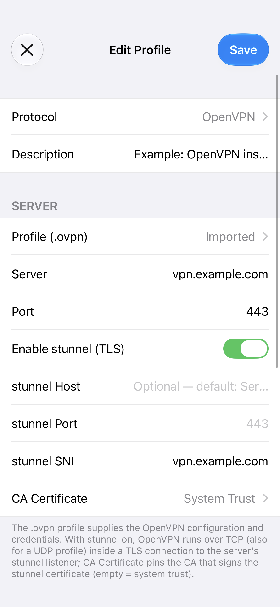
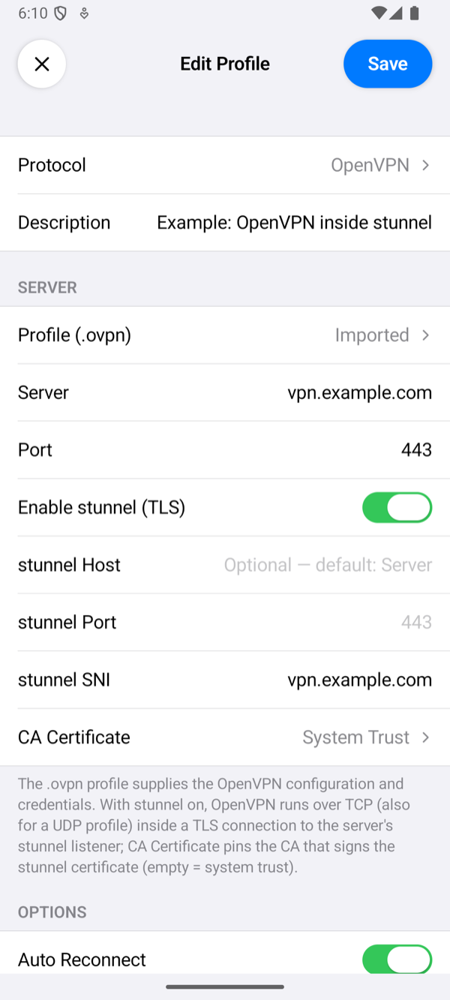
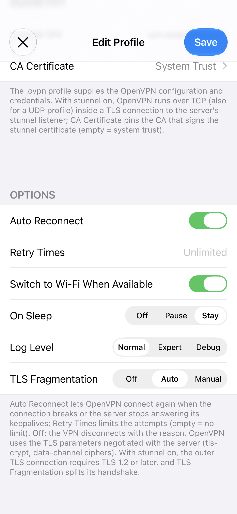
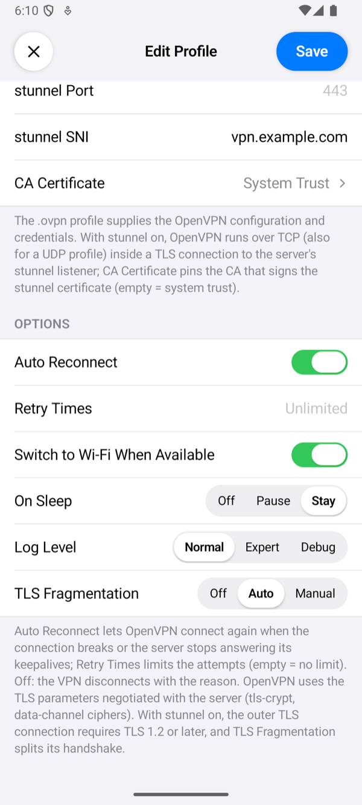
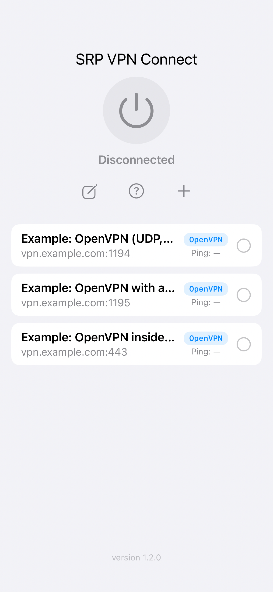
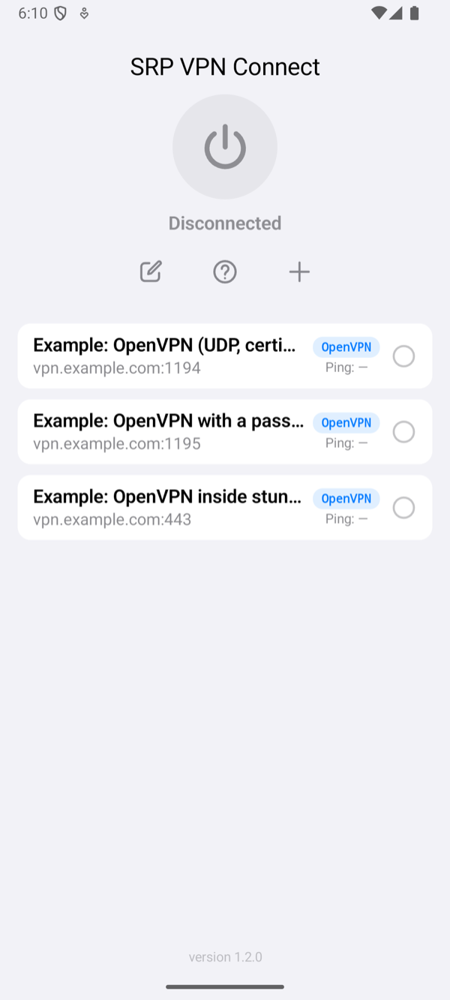

Setting Up the App
An OpenVPN profile has the same fields on iPhone and Android. This page goes through them in the order the profile editor shows them.
The fields, defaults, footers and messages were read from the source code of both apps, and the screenshots were taken from them with example profiles. What each setting did against a real server is in Test results.
Add a profile
Tap + on the home screen, tap Protocol and choose OpenVPN. Import the .ovpn file, check the fields below and tap Save. Save names the first thing that is still missing instead of saving an incomplete profile: Enter the server address., Import an OpenVPN profile. or This OpenVPN profile needs a username and password.


The .ovpn profile
Tap Profile (.ovpn) and choose From Files or From URL. The app takes a profile with its certificates and keys inside it, as <ca>, <cert>, <key> and <tls-crypt> or <tls-auth> blocks; the server guide makes such a file. It refuses a file that does not look like a profile, and one whose certificate was damaged on the way, which happens when a profile is copied through a chat app: import the original file, or use From URL. The row then says Imported.
The profile holds the phone's private key. On Android the app keeps it in its encrypted store.


Server
| Field | What to enter |
|---|---|
| Server | Filled from the profile's first remote line when you import it. Change it to connect to another name or address; then the app uses it instead of the profile's remote lines. Left as it came, a profile with several remote lines keeps them: when the first does not answer, the app tries the next. |
| Port | Filled from the same line. Changed, it replaces the profile's port. Empty means 1194. |
| Enable stunnel (TLS) | Off by default. On: OpenVPN runs over TCP inside a TLS connection to the server's stunnel listener (stunnel on port 443); a UDP profile goes over TCP too. |
| stunnel Host | Optional; empty means Server. |
| stunnel Port | Optional; empty means 443. |
| stunnel SNI | Optional; the name the app sends in the TLS handshake and checks the certificate against. Empty means stunnel Host. A server name in SNI that differs from the host lets the connection look like one to that name, as long as the certificate is valid for it. |
| CA Certificate | System Trust by default: the certificate must come from a public certificate authority, such as Let's Encrypt. Tap it to import the PEM of your own CA instead; the app then accepts only certificates that CA signed. |


Authentication
A profile with an auth-user-pass line asks for a Username and Password; the section appears only then. A profile with only a certificate needs neither. A password may hold any character, spaces and letters of any script included.


Options


| Option | What it does |
|---|---|
| Auto Reconnect, Retry Times | Auto Reconnect (on by default): when the connection breaks, the server restarts the session, or the server has not answered for 60 seconds (the server's keepalive), the app connects again, and keeps trying while the server is away. Retry Times limits the attempts in a row; empty means no limit. Before the first connection, the app tries each remote line of the profile once, and Retry Times repeats that. Without Auto Reconnect, a VPN that was up ends with the reason, for example The server restarted the session (auto reconnect is off). A refused login, a server certificate the profile's CA did not sign, and a server that halts the session are never retried. A phone certificate the server refuses looks like a server that does not answer (the server says nothing), so Retry Times counts those attempts too. |
| Switch to Wi-Fi When Available | On by default: when Wi-Fi appears while the VPN is up, the app moves the connection to it. |
| On Sleep | Stay (default) keeps the connection while the device sleeps. Pause closes it and connects again on wake. Off closes it; on wake it connects again only with Auto Reconnect, otherwise the VPN ends with The connection was closed while the device slept. |
| Log Level | How much the connection log shows. Normal: the milestones: the server, port and transport the app connects to, the settings the server pushed, the session, and why a connection ended. Expert and Debug add OpenVPN's own lines and its events. No level writes the password or a key. Tap the status under the power button to open the log. When the app gives up on a connection, a line starting with OpenVPN: closing with reason: names the reason. |
| TLS Fragmentation | Only with stunnel on. It splits the first TLS messages of the stunnel connection into small TCP segments, which some networks cannot read as a TLS handshake. Off (default) sends them whole. Auto sends 43 bytes, then pieces of 256 bytes (128 on mobile data). Manual takes First Chunk and Following Chunks in bytes, 32 and 256 when empty. The pieces end with the handshake. |
An OpenVPN profile has no proxy setting: the app always connects to the server, or to its stunnel listener, directly.
Connect and check


Select the profile on the home screen and tap the power button. The status changes to Connected once the server has accepted the phone and sent its settings. The row of the profile then shows the time of one request through the tunnel. If it fails, the app shows Connection Failed with a reason; Troubleshooting explains each one.